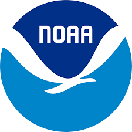

Work Experience
Post-Bac Research Intern
Seattle Children's Research Institute Tang Lab
Assist Dr. Jonathan Tang’s Research on Early Childhood Psychology by applying computational and statistical methods to previous research to gain some insight into the subject.
We investigate how early life experiences influence brain development, behavior, mental health, and consciousness by combining techniques from statistics, structural biology, and computer science.
We are currently looking to develop a Learning Model which can detect if a protein is "Stable."
Student Researcher
Washington Experimental Math Lab (WXML)
As a researcher, my colleagues and I investigated the Voting Rights Violation lawsuit filed against Washington State in the aftermath of the 2020 legislative redistricting process.
We employed mathematical concepts such as Markov Chains and Spanning Trees to generate and establish over 20,000 alternatives maps
We created a dataset that overlaps voting results from previous elections and demographic data using GIS mapping software for over 8000 voting precincts
Finally we employed statistical techniques like ecological inference to establish if racial vote dilution was committed against the Latino community in the Yakima River Valley Area
Research Intern
National Oceaninc and Atmospheric Administration
With help of mentors, we focused on creating user-friendly software applications to enhance accessibility to crucial fisheries management data.
This project involved a Data Visualization tool that summarized essential data for each species, providing decisionmakers with key information to support stock assessments and contribute to impactful West Coast groundfish fishery management planning
Additionally, we developed a Stock Assessment Prioritization tool to address the challenge of prioritizing over 90 groundfish stocks